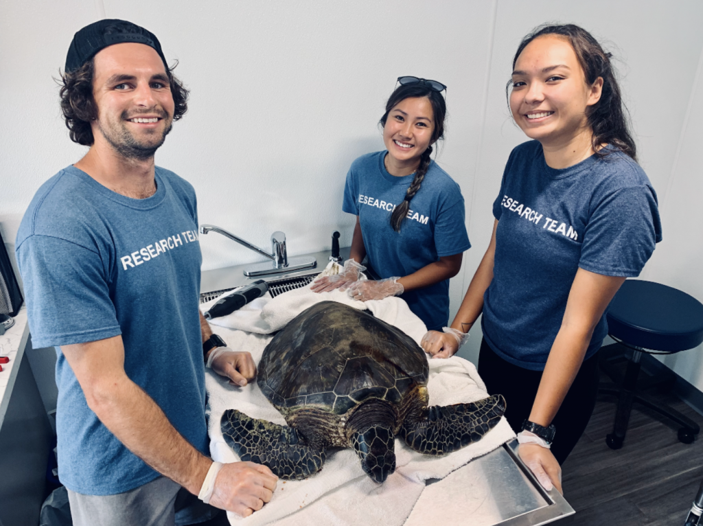
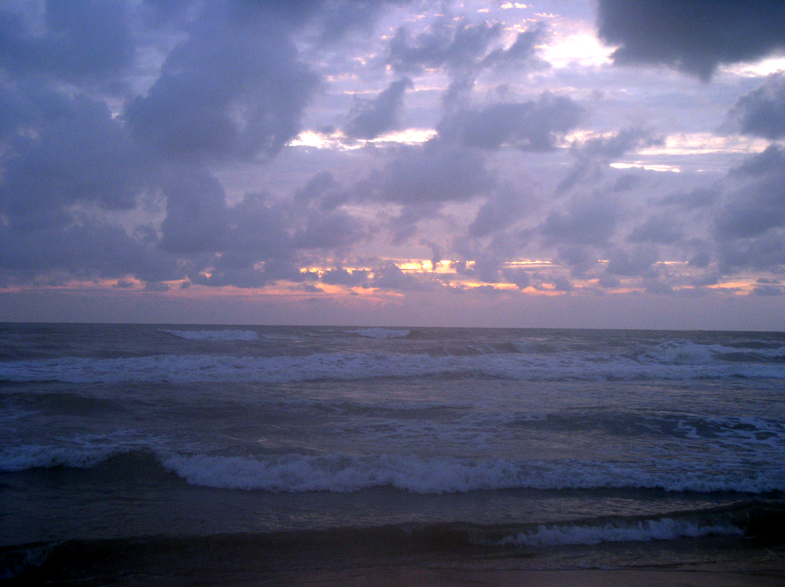
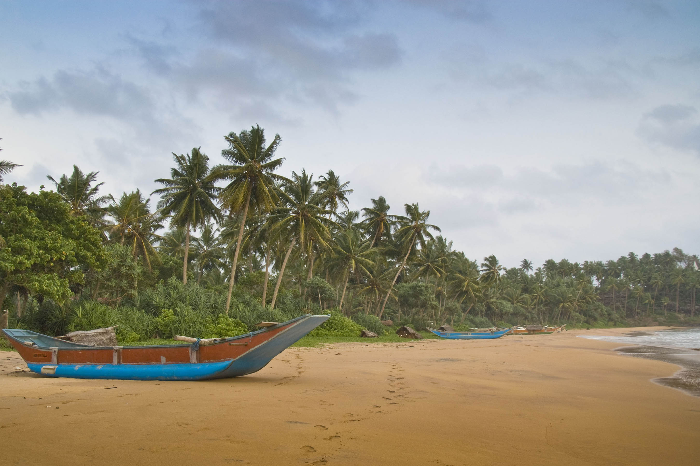

TURTLELAGE
Dive into our mission to save these shellebrated creatures in Sri Lanka!
A Haven for Our Flippered Friends
Welcome to our Turtlelage, a hub dedicated to the conservation and protection of Sri Lanka's magnificent sea turtles. Our hatchery is committed to safeguarding these ancient creatures and raising awareness about their importance in the marine ecosystem.
At our turtle hatchery, we take pride in our mission to collect and incubate turtle eggs, giving them a safe environment to hatch and ensuring the survival of these vulnerable species. Through our efforts, we contribute to the preservation of Sri Lanka's rich biodiversity and the sustainability of its coastal ecosystems. Join us as we embark on a journey of discovery, learning about the life cycle of turtles, the challenges they face, and the vital role each of us can play in their conservation. Together, we can make a positive impact on the future of these remarkable creatures and their natural habitats.
Meet the Champs!
Sri Lanka stands out as a remarkable destination due to its incredible variety of sea turtle species. Along the country's pristine coastline, you can encounter the enchanting Green Turtle, the resilient Olive Rclassley Turtle, the majestic Hawksbill Turtle, the mighty Loggerhead Turtle, and the awe-inspiring Leatherback Turtle. Each species possesses unique characteristics that make them truly special and captivating.
Green Turtle

Leatherback Turtle
Hawksbill Turtle
Despite their distinct characteristics, these sea turtle species share a fundamental role in the delicate balance of the ocean's ecosystems. As they traverse the seas, they help maintain healthy seagrass beds, control jellyfish populations, and contribute to the overall biodiversity of marine habitats. It is our collective responsibility to protect and conserve these remarkable creatures, ensuring that future generations can continue to marvel at the wonders of Sri Lanka's diverse sea turtle population.
Did you know?
- Turtles are ancient creatures that have been around for millions of years, making them one of the oldest reptile groups on Earth. Their remarkable ability to adapt to different environments has allowed them to survive and thrive in various habitats worldwide.
- Turtles are known for their remarkable shells, which serve as their protective armor. Unlike other animals, a turtle's shell is actually a part of its skeleton, providing both strength and defense against predators.
- Turtles play a vital role in maintaining the health of aquatic ecosystems. As they forage for food, they help control the populations of plants and animals, contributing to the overall balance and diversity of marine and freshwater habitats.
Challenges Unveiled
Turtle hatcheries play a vital role in safeguarding sea turtles, but they encounter various challenges along the way. One major obstacle is the loss of nesting habitats due to coastal development and pollution. As beaches diminish, suitable nesting sites become scarce, posing a risk to the turtles' reproductive success. Limited resources, including funding and staff, also pose challenges for hatcheries, affecting their ability to monitor nesting areas effectively.

Despite these challenges, turtle hatcheries and conservation organizations are dedicated to addressing these issues head-on. Through education, community involvement, and sustainable practices, we can overcome these obstacles and ensure the continued survival and well-being of our beloved sea turtles.
THREATS TO TURTLES
Where to?
Embark on an unforgettable journey along the stunning coastal destinations of Hikkaduwa, Kosgoda, and Bentota, where vibrant blue waters and golden sandy beaches set the stage for extraordinary turtle encounters.
-
Hikkaduwa
-
Bentota
 -
Kosgoda

Explore remarkable turtle hatcheries dedicated to the conservation and protection of these ancient creatures, witness nesting rituals, and release adorable baby turtles into the ocean. Beyond the hatcheries, indulge in thrilling water sports, explore mangrove forests, and soak up the sun on pristine beaches. These coastal havens offer a perfect blend of natural splendor and adventure, inviting you to be part of the conservation efforts and create lasting memories amidst the beauty of Sri Lanka's sea turtles.